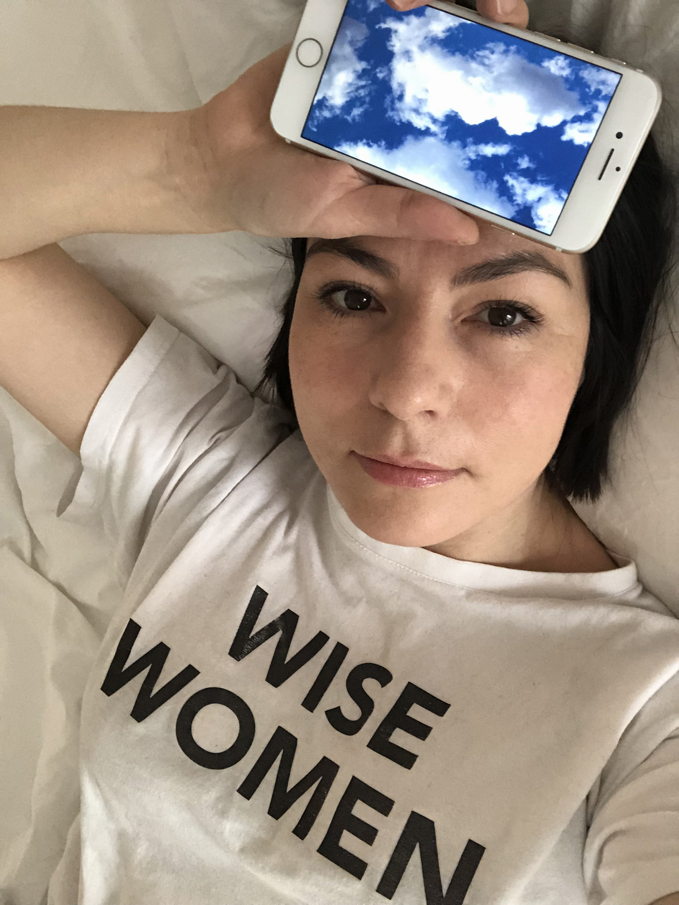
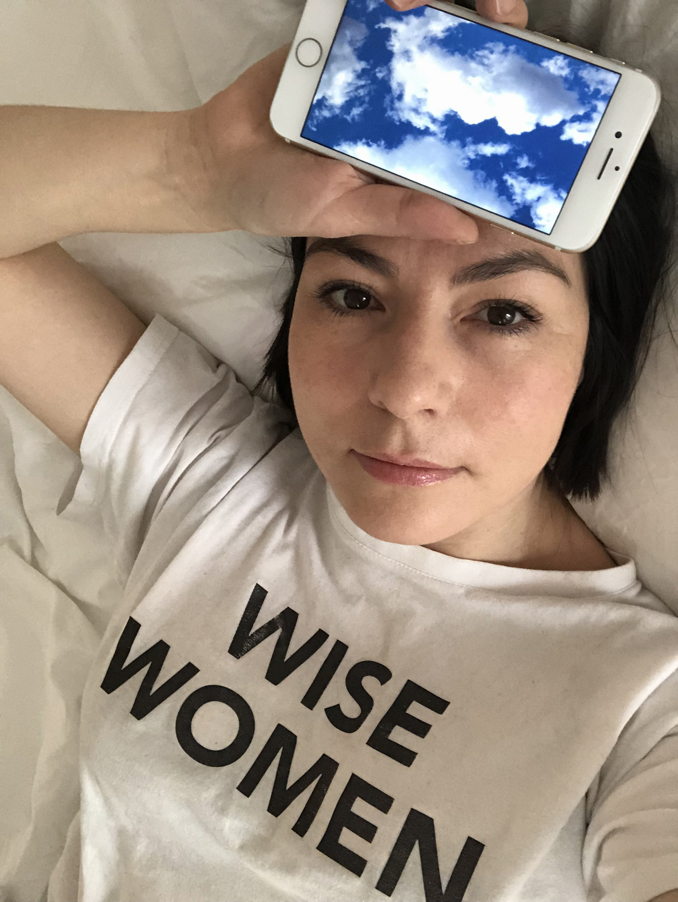

“Maroussia Rebecq sculpte sur le corps un habit qu'elle perçoit comme vecteur de représentation sociale et signe d'appartenance aux tribus urbaines. Le vêtement est le catalyseur, il est formes, couleurs matière, et sens ( …)
L'image de marque d'Andrea Crews s’impose comme celle d'un aimant collaboratif, une nébuleuse do it yourself, Anonymous, reflet fidèle du temps des réseaux sociaux.”
Laurent Bastide
“C'est fabuleux d'avoir la possibilité de combiner les codes de la communication classique tout en ayant la possibilité de faire un côté les choses dingue! Elle a ouvert une voie.”
Sarah Andelman
“Elle se nourrit des compétences de chacun, confronte les points de vue et déploie son énergie pour créer une œuvre tentaculaire à parcourir comme un arbre de vie. Elle voit dans l'expérience sociale interactive un intervalle créatif absolu.”
Florence Parot
“Tel une identité réversible Andrea est le côté face de Maroussia et Maroussia le côté pile d'Andrea. Andrea Crews c'est la volonté d'exister, de n’apparaître que sous un nom générique en incluant l’'autre. C’est une femme libre résolument contemporaine qui peut apparaître quand elle veut, où elle veut, sans limite, et sous toutes ses formes.”
Jérome Sans
“Le plus intéressant dans la démarche de Maroussia et cette façon qu'elle a de renoncer aux catégories et de transgresser avec humour univers de la mode et des arts visuels qui sont finalement assez content Conservateur. Sa force se situe dans les zones non banalisées.”
Claire Staebler / Fondation Louis Vuitton
“Maroussia Rebecq aboli les clivages, multiplient des données in and out, contrarie les présupposés d'une époque. Il n'y a pas de différence de rempart entre elle et les faits, elle se frotte jusqu'à ce qu'un possible existe enfin.”
Lili Reynaud Dewar
“Pensant le monde par l'action Maroussia Rebecq nous invite à rester puissant en prenant le pouvoir sur un monde qui nous veut à sabote un monde qui jour après jour nous façonnent aux consommateurs paresseux.”
Laurent Idir
“Pour moi le premier activisme Maroussia se situe ici au cœur des stratégies de l'apparence ( …) Elle propose une prise de pouvoir par rapport à notre société de production et à la consommation de masse, une prise de pouvoir par rapport à la réalité, un exercice mental autant qu' un exercice de mode.”
Dominique Babin
“Ce soir-là, les téléphones qui filmaient n’ont pas empêché les spectateurs d’applaudir chaudement, sans trop savoir s’ils saluaient la performance mode, artistique, sociale ou tout simplement individuelle.”
Caroline Rousseau
“Elle revendique une vision qui fait du vêtement un objet d’art et d’activisme social, et de la mode un vecteur de liberté et de changement.”
Alice Pfeiffer
“Sa méthode est ingénieuse car elle se base sur la force du collectif pour créer de l’émotion. Maroussia est ancrée dans son époque et c’est ce qui l’a rend, depuis des années, toujours accurate.”
Laura Brown
“Artiste et pirate, elle crée des interventions drôles, vives et étranges, aux frontières de l’art, au coeur du monde sensible.”
Jean Marie Durand
 
